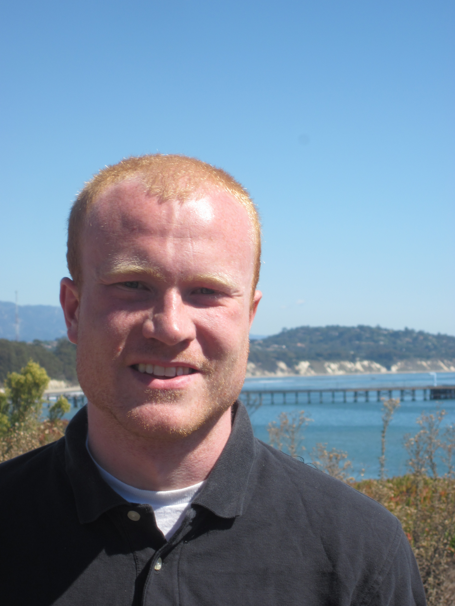

Jeffrey R. Peters
Graduate Student Researcher
University of California, Santa Barbara
Home
Biography
Projects
Publications
Software
Contact Information

|
Department of Mechanical Engineering Center for Control, Dyn. Systems, and Comp. University of California, Santa Barbara Email: jrpeters at engineering.ucsb.edu Tel: +1 (805) 893-2801 Office: 2217 Engineering II |
Research Interests
- Robotic Coordination and Motion Planning
- Human Supervisory Control
- Autonomous/Unmanned Systems
- Networked Dynamics and Estimation
- Human Factors/HRI/HMI
- Algorithmic Implementation
News
- Jan 2016: Our robust scheduling paper has been accepted to ACC 2016
- Jan 2016: Submitted our vehicle routing paper to AIAA JGCD
- Dec 2015: Submitted our paper on Robust Scheduling to AIAA JAIS
- Dec 2015: Our paper on supervisory control appears in IEEE CSM
Recent/Upcoming Travel and Talks
- American Control Conference, July 6-8 2016, Boston, MA
- United Technologies Research Center, July - Sept. 2015, E. Hartford, CT
- American Control Conference, July 1-3 2015, Chicago, IL
- US Army Aeroflightdynamics Directorate, Dec. 2014, Moffett Field, CA
Teaching and Outreach
- TA-ME 104: Mechatronics. Instructor-Brad Paden. UCSB, Fall 2015.
- TA-ME 16: Dynamics. Instructor-Otger Campas. UCSB, Spring 2014.
- Instructor-School for Scientific Thought, "Thinking Robotics:Teaching Robots to make Decisions."UCSB, Winter and Fall 2013
- TA-ME 104: Mechatronics. Instructor-Brad Paden. UCSB, Fall 2011.
- Eng. Learning Assistant-Eng 100-Intro to Engineering. UIUC, Fall 2010.